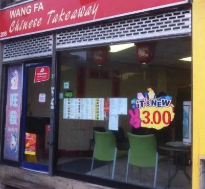
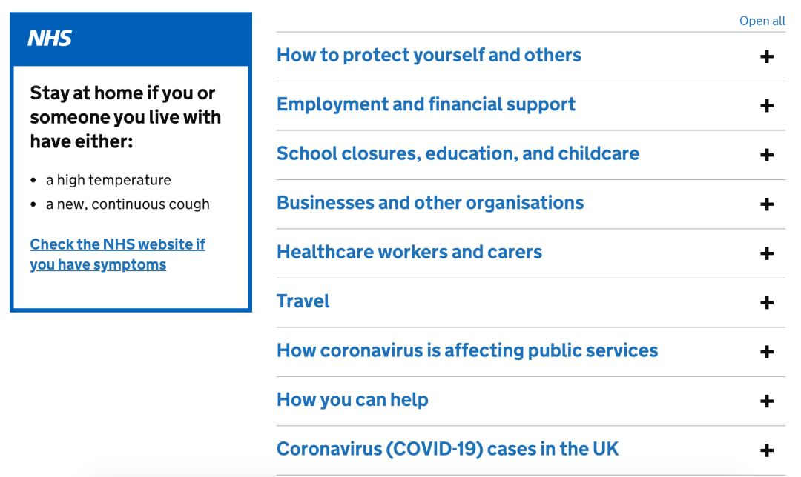

我在海外 | 身在英国的我，看清了首相约翰逊的防疫“真面目”
原文链接 备份链接 自疫情暴发以来，约翰逊出人意料地坚持走“科学”防疫路线。 文 | 赵 璧（上海外国语大学英国研究中心研究员） 北京时间3月23日晚，中国国家主席习近平同英国首相约翰逊通电话。约翰逊表示，英国疫情形势严峻，英方正在研究借 …


很多网友吐槽“英式抗疫”，大多源于对国情、文化、民众心理以及医疗体系的不理解。
“群体免疫”在世界各地炸了锅后，英国卫生大臣马修·汉考克回应：大众对“群体免疫”断章取义了，这不是英国政府的目标或者政策，这是一个科学概念，我们的政策是保护生命并打败病毒。
英式抗疫也有很多可圈可点之处。最关键的一点：假设民众“不是愚蠢的，而是可以被信赖、被托付的”。

3月20日，正值周五，伦敦东南部，靠近布利克斯顿（大伦敦地区的35个中心之一）的小餐馆“旺发”，不到5平方米的小店堂里两个身着英国版美团“Deliveroo”外套的快递员在等着取外卖。福建老板娘王姐正忙着接电话、给厨房下单、包装炒饭。这一天，外卖生意比平日多了。

通常英国人都有下班后同事交际应酬的习惯，街头酒吧餐馆往往人满为患，但英国政府在当天宣布英格兰和威尔士地区当晚关闭所有酒吧、咖啡馆和餐馆，同时也按两天前既定的方案，关闭中小学校——这标志着应对新冠病毒的措施进一步升级。当天，英国新冠肺炎确诊病例增至3983人，其中177人死亡。
当地时间23日晚上（北京时间24日凌晨），英国防控再次升级，首相鲍里斯发表电视演讲，要求民众除了购买必需品、每天一次的锻炼、医疗需要或为弱势群体提供帮助以及不能在家完成的工作之外，必须留在家中。并要求关闭出售非必需品的商店和图书馆等场所（公园继续开放供人们锻炼）、停止在公共场所举行两人以上的聚会（家人除外）、停止社交活动（葬礼除外）。如果不遵守，警察有权干预，包括罚款和分散聚会。截至23日，英国确诊人数增加至6650人，死亡335人。
王姐来英国20多年，英语新闻看不懂，主要信息还是靠中文媒体。微信里各种“英国政府消极抗疫，放任疯狂人传人”、“群体免疫法，拿人命豪赌”、“海德公园、西敏寺将成停尸房”的帖子满天飞，把形势形容得十分恐怖。远在中国的老家人担心，不停发语音问疫情，让不行暂时回国避避风头。
但王姐眼见英国人依然淡定，和微信中的恐慌差别很大。“我们主要做外卖的，国内最严重时，这里并没因为是中餐生意受什么影响。前一阵子伦敦开始有疫情了，照理叫外卖应该的多，但这些老外他们不管啊，还到处出去吃饭聚会啥的，你看有哪个戴口罩的？”
不过，如今防控措施升级，人们的生活也开始发生改变。“政府要求关闭堂食的餐馆，对我们没有要求，” 王姐手机上的订餐APP叮咚作响，提醒她不断进来的订单，“外卖生意不受影响，反倒忙起来了。”

△英国版“美团”快递员
“群体免疫” 争议的出炉
3月3日，确诊人数39人时，英国公布了抗疫计划，分为遏制、延缓、缓解、研究四个阶段。3月12日，确诊人数突破590人、死亡10人，首相鲍里斯·约翰逊和全英首席科学顾问派屈克·瓦兰斯爵士、全英首席医学顾问克里斯·威迪教授共同出席新闻发布会，宣布计划进入第二阶段，即延缓，并说：很多家庭可能会失去挚爱的家人。
△鲍里斯新闻发布会，没有提到“群体免疫”。
第二天，瓦兰斯接受采访时，提及认可一个科学概念“群体免疫”，经媒体报道被误读为英国抗疫目标后，传到中国国内几乎炸了锅，大多数人表示难以置信，认为英国政府不作为、草菅人命。
生活在英国的一部分华人也开始恐慌。某航空公司英国直飞中国的公务机包机单程机票据传炒到了18万，订票网站上需中转的普通经济舱票价也从平时的三四千飙升到了一两万。
就读于帝国理工学院的陈同学，在父母催促下，全程滑雪眼镜、口罩加毛线帽，从伦敦希思罗机场出发一路辗转。降落上海浦东国际机场，核酸检测后，他发了个朋友圈：“人在囧途。经过两天多的折腾，终于到达酒店，开始隔离期了。完全不知道下一步这个世界会奔向何方，完全不知道下一次自己什么时候回英国。”
相比之下，英国本地居民除了各大超市排队扫货罐头、手纸、通心粉和水果蔬菜外，大多心态平和表现淡定，社会秩序井然。
英国剑桥大学博士后、伦敦国王学院医学统计学教授及大数据统计咨询中心主任王岩中教授，是重大疾病预测模型构建和大型流行病学研究及临床试验的世界级专家。已于英国学习和工作了20多年的他，对目前的抗疫计划持赞成态度，认为其从英国国情现状出发，相对谨慎稳妥。
“英国之前出台任何政策，政府都要挨骂，为何这次骂的人比较少？目前国会网站上签名请愿人数约30万，而英国人口近6800万，只有百分之零点五不到的人（表达了）反对。鲍里斯宣布抗疫计划时，跟他一同出现的派屈克·瓦兰斯爵士和克里斯·威迪教授，祖师爷级别的，背后几十位专家团队，全部是世界顶级的流行病学家、生物信息大数据学家和病毒学家。我们同行之间平日学术争论很多，看到这个阵容做出的计划，也都达成共识，它绝对严格依据科学制定，在没有疫苗情况下，也可以说是没有办法的办法，能最大程度将死亡率控制在最低。”

王岩中教授在中国新冠肺炎疫情中，与复旦大学附属中山医院合作，共同关注新冠病毒对心脏及心脑血管的可能影响。对于网上“抄作业”的说法，他认为各国国情、民众心理都不一样，好比考卷完全不同，作业其实没法抄。中国厉害在国家执行力强、医院硬件设备齐、老百姓配合程度高，这是任何国家都难比的。
就英国来说，自1948年起实行的一直是全民国家医疗服务体系（NHS），小到擦伤，大到癌症手术或基因治疗，全都免费，只要付个10镑不到的药物处方费。治慢病很慢且医院与医院之间没有太大区别；但对急症非常快，打999急救电话后，视情况甚至可动用直升飞机，病人不需要花一分钱。NHS一直是英国全民的骄傲，曾与哈利·波特一起，作为最能代表英国的两大元素出现在伦敦奥运会开幕式上。NHS遵循普遍性原则，无论贫富按统一标准享受，是英国福利制度的最大项目开支，它的主要经费来源是税收。脱欧之后，NHS面临医护人手缺乏等严峻挑战，如今新冠疫情席卷而来，倘若民众恐慌大量涌向医院，挤兑有限的医疗资源，很可能成为压垮骆驼的稻草。
很多网友吐槽“英式抗疫”，大多源于对国情、文化、民众心理以及医疗体系的不理解。居住在英国的华人，基本可以分成这几类：在当地从事餐饮、美容、服务等工种的劳务人员，不会英语或只会简单交流的英语，主要信息来自于中文网络媒体；留学生群体，与当地人融入程度不高，对学业以外的相关政策缺乏了解，被父母和周围同伴影响决策；受教育程度较高的华人工薪阶层，可以直接看英文官方数据或者正规媒体新闻。王岩中教授认为，获取信息的渠道不同，就造成各人心态不一，面对疫情的反应也不同。
英式抗疫可圈可点之处
八点健闻访谈了多位流行病及公共政策领域的专家后发现，英国政府对疫情的应对也有可圈可点之处。最关键的一点，是它假设民众“不是愚蠢的，而是可以被信赖、被托付的”——正如伦敦城市大学著名学者、畅销书《大流行病世纪：百年恐慌、癔病和傲慢》作者马克·霍尼格斯鲍姆所说：尽管政府的抗疫计划尚未奏效，但我们拥有理性的公众和理性的媒体。
一、第一时间坦诚面对公众
英国首相鲍里斯·约翰逊在新闻发布会上，不扮演包打天下、无所不能的父母官，而是先把最坏的可能告知大家：

可能是英国这一代人面临的最严重的公共卫生危机，更多的家庭，得做好失去所爱之人的准备。根据模型测算，最糟糕的情况是约80%的人可能会被感染；儿童也可能受到感染、“病情严重”；随着疫情发展，可能会关闭学校、减少公众聚会、居家上班；在疫情最严重时，可能会有高达“五分之一”的劳动人口请病假，到时英国警队可能只有警力应付最严重的犯罪和维持公共社会秩序；为了治疗新冠病人，到那时医院也可能会推迟非紧急病人的治疗。
接下来，向公众展示经过专业团队论证的整个抗疫蓝图及四阶段步骤，令大家提前知其然也知其所以然。并告知当前正处于“延缓”阶段，尽可能延缓疫情传播的进程，把发病速率降低，从而给医疗系统尽可能争取应对的时间。
民众的恐慌源于无法掌控和不知所措，当他们被清晰地坦诚告知，心理上也就做好了预期和准备。
二、信息公开透明
英国政府官方网站gov.uk专门设立新冠病毒专区，发布公告并随时更新政策和专业医疗资讯，最大程度涉及公众关心的方方面面。

△英国政府官方网站截图
被中国很多自媒体翻译转载的英国疫情大多来自《每日邮报》《太阳报》等小报，内容和标题往往夸大其词，目的在于抓人眼球从而获得阅读量。而英国普通公众早已养成了日常习惯，有任何大大小小的民生诉求和疑问，不会依靠道听途说，直接上政府官网搜索公开免费的官方资讯，了解详细办事流程。
三、有效利用媒体及公共平台
鲍里斯·约翰逊本人是记者出身，深知媒体的重要性，其幕僚团队军师多米尼克·康明斯更是熟稔媒体的运作。在新冠疫情袭来之时，鲍里斯携专家团队向全民电视及网络直播宣布抗疫计划，至今每天都会准时举行公开且直播的“新冠疫情记者发布会”。在推特、脸书等新媒体平台上不间断地以首相个人号、团队号或者官方号，发布最新疫情进展，同时鼓舞民心。

△鲍里斯新闻发布会
国会网站上常年设有“请愿”专区，不仅仅为了新冠疫情，任何人都可以就任何主题发起请愿，只要超过10000个签名，政府便会回应。网传的“600多个英国专家联名抗议政府抗疫计划”并未在国会请愿网站上查到，而有30多万签名的“要求整个英国各地全部封城”的请愿帖（“要求刺猬成为保护动物”的请愿帖签名是4万多），政府部门给予了详尽的回答，解释为何要一步步来，如果一蹴而就，短期内的确可以抑制疫情，但却可能给NHS和经济造成不可估量的重创。况且从所有历史上的流行病大数据来看，就算短期被抑制了，当一切隔离措施取消之后，疫情很可能会卷土重来。
政府官方网站还设有媒体联络处，公开24小时联系方式，无论专业记者还是平民百姓都可以致信或致电就疫情发问。
三、全民动员，全民参与
疫情尚未严重之时，各界已经陆续从工作或学习的地方、孩子的学校、社区诊所，甚至自己常去的图书馆、餐厅或健身中心等渠道获取邮件，被告知“疫情正在逼近，我们正在关注并做好各种应对的准备，也会随时通知你疫情的进展，以便采取进一步的措施”“如果你对疫情感到恐慌，可以寻求心理支持的途径”等等，令民众从社会、经济、医疗、心理等多个层面准备应对疫情继续恶化的局面。

△社区互助信件
各大超市早早制定了疫情期间的备案，以应对可能的哄抢，并做了演习和预估。学校也给予大中小学生各种关于新冠病毒的知识，教大家如何理性科学地看待疫情，同时科普避免中招的卫生习惯。
平日里并不从事临床工作的大学和研究机构的医学人员，也被邮件通知要随时待命，在疫情最危险时可能会被征集到NHS增加力量，而最近退休的医护人员也被通知可能会被随时召回工作。大众普遍感到自己并非袖手旁观或消极等待中，而是肩负使命，随时准备为这个国家贡献一份力量。
四、及时面对质疑、澄清误解
“群体免疫”在世界各地炸了锅后，英国卫生大臣马修·汉考克接受BBC采访回应：大众对“群体免疫”断章取义了，这不是英国政府的目标或者政策，这是一个科学概念，政策是保护生命并打败病毒。
当被媒体质疑英国行动太晚，错过了最佳抗疫时机，瓦兰斯解释：从一月开始就已在研究和预备措施了，并不是这两天一拍脑袋的结果。而且现在也已经在一步步按计划实施措施了。不愿意因为某些外界压力，就在错误的时间里，匆忙采取计划外错误的措施。
英国西北部前公共卫生区域主管约翰·阿施顿教授说英国抗疫行动计划是一群木讷的学术呆子制定的，瓦兰斯答道：我可以理解很多人会有这样的想法，但这就是目前从科学角度能制定出的最合理恰当的实用措施。
五、取之于民，用之于民
3月20日，英国政府承诺帮助英国雇主解决80%的人员工资，上限为2500英镑每人每月；疫情期间，不仅全民医疗免费，所有在英国的游客，甚至无签证黑户人士也同样免费；下一步重点将确保所有医院配备有足够的防护装备和呼吸机；增加每日检疫的目标为25000人。6月底前，企业都不需支付增值税，大约增加300亿英镑的流动资金。
未来12个月全民统一福利金将增加1000英镑；就业人员返税金增加1000英镑/年；个人所得税申报推迟至2021年1月；推出企业贷款计划提供12个月免息贷款给中小型企业；向租客们提供总额10亿的支持，避免居民流离失所；自雇人士将以法定病假补贴的比例全额获得全民统一福利金。
六、鼓励国民健康心态
王岩中教授分享了一个刚发生在他身边的病例。与他同办公室27岁的小伙子，发现自己有点低烧症状，主动打999去医院检测为阳性。他因为不属于高危人群，危险程度非常低，医生进行治疗后让回家休养并进行自我隔离。小伙子的太太目前正在怀孕中，但由于他从事的就是全球流行病研究，所以毫不慌张，到家立即发邮件通知整个办公室都要自我隔离14天。同事们之间分享了隔离期间可以看的电影，还互相打趣，说这小伙子恢复后，就是整个办公室最具免疫力的壮男了。
不了解英国抗疫行动的人以为这个计划对老人或者孕妇等易感脆弱群体相当不友好，其实恰恰相反。国家一开始就把他们列为重点保护对象，给出注意事项和详细建议。

由于英国出台一项法律法规的程序非常繁琐，因此抗疫行动并非强制，而是“强烈建议”，比如，强烈建议70岁以上的老人居家隔离4个月，这个过程中，社区和各个民生部门都会给予经济上和生活上的特殊照顾，超市等处也专门留出了全天候的“老人购物时段”。
同时，媒体不断呼吁全民相互守望，彼此照应，各企事业单位、学校、社区等都设立了网上群，同事、同学、家人、朋友、邻里之间分享各种居家趣事、幽默段子和学习链接，而不是一味地转发阴谋论。
目前，英国全民正掀起规模宏大的自发相约“为我们的守护者鼓掌”（Clap for Our Carers”），将于3月26日晚8点整，任何身在英国当地的人，将同时出现在各家阳台、窗口，一齐为奋战在第一线的NHS医护人员鼓掌加油。
曲玉萍|撰稿
王吉陆|责编
致读者：
“八点健闻”公众号将于4月11日恢复更新。在此之前，我们在“八点健闻Plus”发表报道。敬请关注。

我们尊重原创版权，未经授权请勿转载。
郑琪|授权转载
微信号：1281949389
商务合作
上海：leslee 13916263824
北京：Jessie 13911125922
反馈交流，加入核心读者社群
请扫码联系健闻君

让朋友们看到你也在看
↓↓↓
原文链接 备份链接 自疫情暴发以来，约翰逊出人意料地坚持走“科学”防疫路线。 文 | 赵 璧（上海外国语大学英国研究中心研究员） 北京时间3月23日晚，中国国家主席习近平同英国首相约翰逊通电话。约翰逊表示，英国疫情形势严峻，英方正在研究借 …
原文链接 备份链接 作为现代公共卫生的起源地，英国应对新冠肺炎疫情的机制备受关注。但随着疫情的蔓延，英国的防疫策略也是最受争议的 2020年3月19日，在英国英格兰北部约克市中心，两名妇女在相邻的公园长椅隔空聊天。图/法新 文 |《财经》 …
原文链接 备份链接 作为现代公共卫生的起源地，英国应对新冠肺炎疫情的机制备受关注。但随着疫情的蔓延，英国的防疫策略也是最受争议的。 本文 6481字，阅读全文约9分钟 2020年3月19日，在英国英格兰北部约克市中心，两名妇女在相邻的公园 …
原文链接 备份链接 意大利确诊数破千时，大部分英国人还在隔岸观火，有人甚至拿新冠病毒开玩笑。如今英国人聚集的社交网络上多的是祈祷上帝保佑的推文。有人调侃说，老外都跟在华人后面逛超市，华人买什么他们就买什么 文 |《财经》驻英国特约作者 文 …
原文链接 备份链接 实习记者 | 文思敏 编辑 | 倪 妮 眼下，居住在英国苏格兰首府爱丁堡的Naomi感到很无助。 Naomi来自中国台湾，在英国已经居住了近七年，丈夫James则是苏格兰本地人。从3月7日起，James开始出现咳嗽、 …